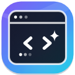

Escolha um modelo e comece a conversar.

Conecte um provedor para começar. Suas chaves ficam salvas somente neste navegador.
Uma única chave para Claude, GPT, Gemini, DeepSeek, Llama e centenas de outros modelos. Criar chave ↗
Ollama ou LM Studio rodando no seu computador. Grátis e 100% privado.